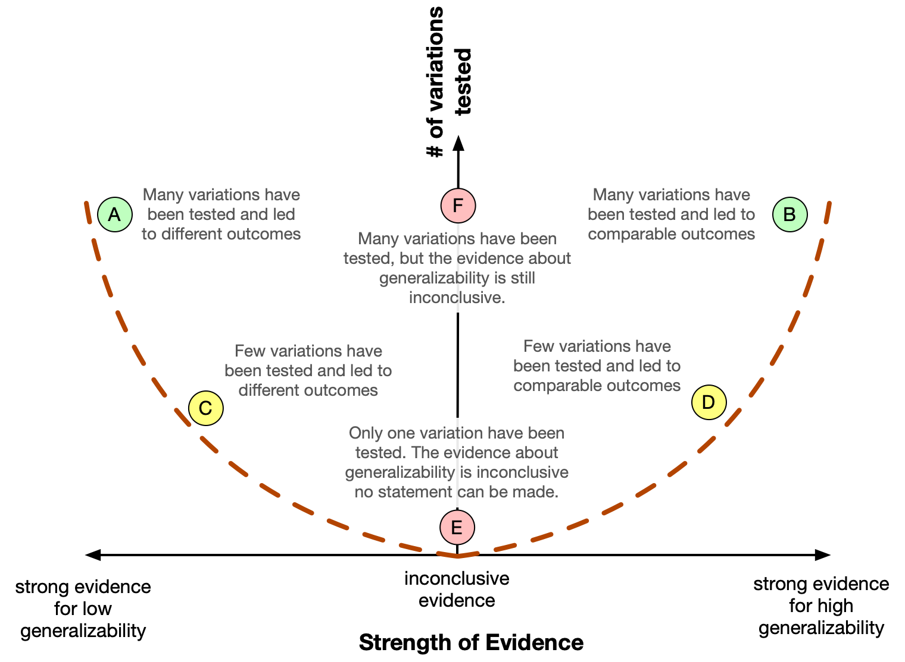
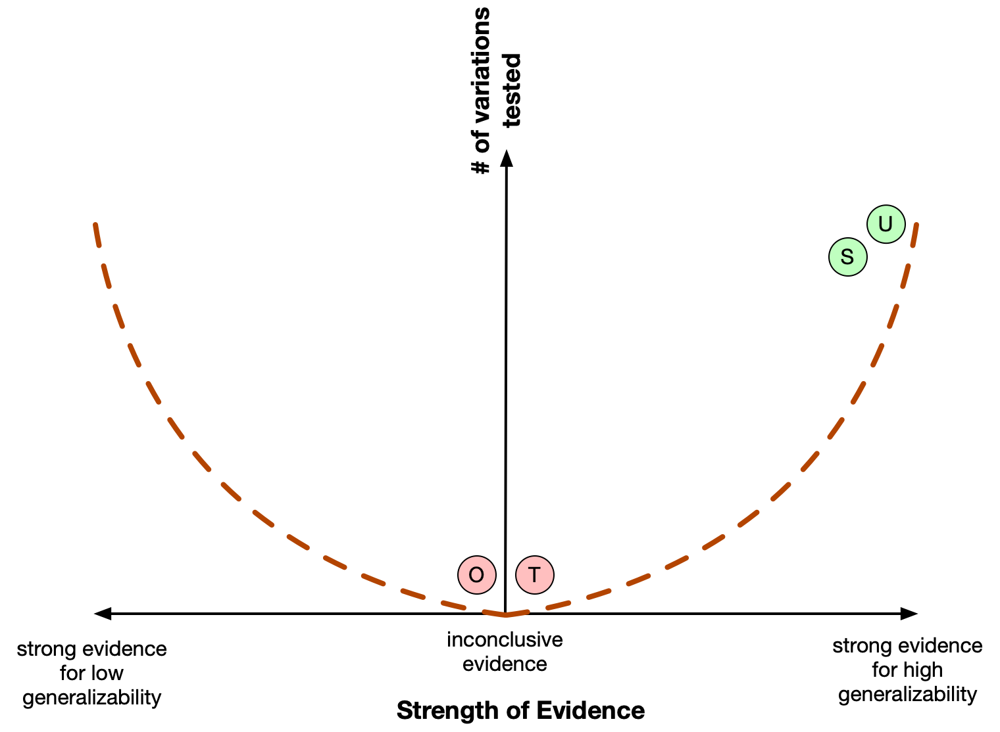

Session 8 - Step 1 in TCM
Overview
| Topic | Duration | Notes |
|---|---|---|
| Workshop: Work on step 1 | ||
| [Homework]: Finalize step 1 | - |
TCM steps
- TODAY: Identify definitions of constructs and relevant phenomena
- Formulate a prototheory: Create a VAST display
- Develop a formal model:
- Develop a Bischof control system display?
- Implement in a programming language?
- Check the adequacy of the formal model
- Do sensitivity analyses etc.
- Evaluate the overall worth of the constructed theory
Possible approaches
Formalization approaches can differ in their starting point (which often are not clear-cut distinct):
- (A.) Start with the verbal theory, formalize it as it is.
- Interpret the verbal statements, make them more precise, visualize as a VAST display
- Ignore empirical evidence (even if a hypothesized effect has already been empirically rejected, keep it in the model)
- Do not fix inconsistencies, do not improve the theory: We want to make explicit what the original had in mind with their theory.
- (B1.) TCM approach: Start with robust phenomena, invent an explanatory theory and formal model
- Ignore existing verbal theories (which might be hard once you know them)
- This will (potentially) lead to an alternative theory/model to the existing theory
- (B2.) Demiurg approach: Start with an adaptive problem, construct an organism that is able to solve the problem
- Potential (draft) formulation of an adaptive problem: “For social mammals, contact to other groups is both a source of opportunities (genetical diversity for mating, knowledge exchange, exploitation) and risks (getting exploited / killed, …). Organisms need to decide when to get in intergroup contact.”
- The design of the organism should be based on prior knowledge of capabilities and limitations of organisms
- The adaptive problem often implicitly is informed by evidence and phenomena: We know that organisms are capable of solving that in some way.
- (A-B.) A-B fusion: Starting point is the narrative theory, but you limit your formalization to those aspects which are (a) theoretically central OR (b) relate to robust phenomena.
Decisions we made together with the expert researcher:
For limiting the scope of the formalization exercise, we decided to focus on these variables:
- “Valence of imagination” as moderating variable: This is theoretically important, but there is conflicting empirical evidence (the valence doesn’t seem to make a difference; see meta-analysis of Miles & Crisp, 2014)
- Affective processes as mediating variable
- Erst die Prozessvariablen machen aus der Hypothese eine Erklärung. Aber die Erklärung ist recht unterspezifiziert: was genau heißt “die Einstellung ändert sich”. Was genau? Die Valenz? Der Inhalt? die gefühlte Distanz zur outgroup Eine Möglichkeit: Ängste reduzieren.
- Primary outcomes:
- “Im Kern der ursprünglichen Hypothese liegt die outgroup perception (welche ein Oberbegriff von”Einstellung” und/oder die “Vorurteile” ist (Einstellungen werden als Proxy für Vorurteile genommen)”
- “Einstellung” als weiteres Konstrukt aufnehmen (vor der approach tendency)? Zu komplex/schwammig? Wie ist dieses Konstrukt im Kontext dieser Theorie definiert? –> wenn dann irgendwie konkretisieren
- Einstellung hat drei Komponenten: kognitiv, affektiv, beharioval tendency
- (Self-reported) approach tendencies
- We do not model actual behavior, as this is too multi-determined. Hence, everything happens “within the mind” of the actors.
Practical first steps:
- Work as one or two groups?
- Collect definitions and relevant phenomena in the entire group (so that all have the same foundation)
- Strive for one common model
- Assign subtasks to subgroups, results are discussed and get merged (as a consensus) into the joint model
- Faster if one group
- Create a new Github repository. Initialize with a README; create a
devbranch, start working there. - Google doc with “how to”: Collect all practical tipps and decisions that helped you to accomplish this task
- Enter your notes (during the working session) into collaborative markdown documents (e.g., on HedgeDoc). At the end of the working session, add/update the markdown doc in the Github repo.
TCM Step 1: Identify definitions of constructs and relevant phenomena
Two goals:
- Decide upon a working definition for your focal constructs.
- Identify and define empirically robust phenomena related to your constructs.
Concrete steps
1. Definitions
Use the primary literature to define the focal constructs:
- Search for definitions, collect them in a document (remembeto provide precise references, with page number).
- Compare different definitions (maybe in a table?)
- (optional) If no single existing definition is sufficient, agree on a consensus working definition for the context of our project.
- Deliverable 1: Write a paragraph/section/table that collects the final definitions. Clearly cite and quote existing definitions. Make clear when you deviate from an existing definition and give a justification why.
- Deliverable 2: Create a first VAST display with constructs and naming relationships (use either verbal quotes or your consensus definition)
2. Robust Phenomena
Phenoma describe relations between our focal constructs.
Robustness of phenomena has two dimensions:
- strong empirical evidence
- generalizable (cf. UTOS framework): The effect has been shown for different Units, with different operationalizations of Treatments and Outcomes, and in multiple Settings
- Search for meta-analyses that report on phenomena with our focal variables
- Only if no meta-analysis is available, or it is not helpful: Do a broader literature search on the level of primary studies.
- Assess the robustness of the phenomena along the two dimensions:
- How strong is the evidence? (e.g., based on number k of studies in a meta-analysis, strength of evidence, risk of bias)
- How generalizable is it? Go through all four UTOS dimensions and evaluate which types of generalization have been shown across studies.
- Deliverable 3: Write a paragraph/section that makes an overall assessment of the robustness of each phenomenon and gives a clear and explicit answer: “The phenomenon can (not) be considered robust because, …”. Refer to the two dimensions of robustness and point towards references that back up your claim with evidence.
How to assess “strength of evidence”
TODO
How to assess “generalizability”
When you assess the generalizability, you should distinguish three prototypical epistemic states:
- “I know that it is generalizable.”
- “I know that it is not generalizable.”
- “I do not know whether it is generalizable or not - with the given empirical evidence I cannot answer this question.”
As the strength of evidence can be continuous, the situation can be visualizes on a graph (see Figure 1):

We describe six prototypical examples:
- (A): Many variations have been tested and led to very different results, maybe even with a sign flip. This is strong evidence that the phenomenon is not generalizable.
- (B): Many variations have been tested and all led to comparable results. This is strong evidence that the phenomenon is generalizable - at least within the space of sampled variations.
- (C): Few variations have been tested and led to quite different results. This is weak evidence that the phenomenon is not generalizable.
- (D): Few variations have been tested and all led to comparable results. This is weak evidence that the phenomenon is generalizable.
- (E): Only one variation has been tested. It is principally unknowable whether the result generalizes to other variations; the evidence is totally inconclusive. We can only conclude that we cannot conclude anything about generalizability. This also implies, that the question of generalizability cannot be answered if only a single (or very few) studies are available, or if the existing studies have no variation in the respective UTOS dimensions.
The dashed line symbolizes the space of possible combinations: With very small samples, it is very unliekly (or even impossible) to generate strong evidence in either direction.
An open question of course is, how close results should be to speak of high generalizability? Do the results in the right half of the plot have to be nearly identical? How much heterogeneity is allowed?
Applying the heuristic to ManyLabs2
All four UTOS dimensions can get an independent assessment. Consider the ManyLabs2 study: The identical experiment (except translation of materials) has been administered online in very diverse samples (at least diverse with respect to nationality and cultural background). Hence, there was high variation in the U(nits) and the S(ettings) dimensions, but very low variation in the T(reatment) and O(utcome) dimension. Non-zero effects were found with remarkably low variability across samples: “Cumulatively, variability in the observed effect sizes was attributable more to the effect being studied than to the sample or setting in which it was studied” (quoted from the Abstract).
Hence, a stylized analysis of the ML2 study could look like:

Hence, we have strong evidence for high generalizability for the U and the S dimension, but we cannot make a conclusion concerning the T and the O dimensions, as they lacked the necessary variation in the study.